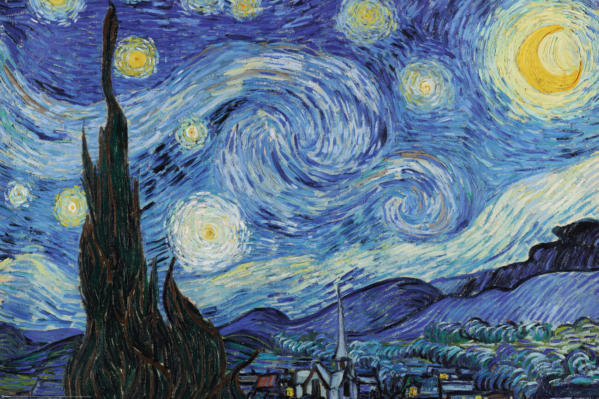

 La Noche Estrellada de Vincent Van Gogh, 1889. Una representación vibrante del cielo nocturno.
El color y la textura de las pinceladas son elementos clave que definen el estilo de Van Gogh, lo que se puede observar claramente en esta pintura.